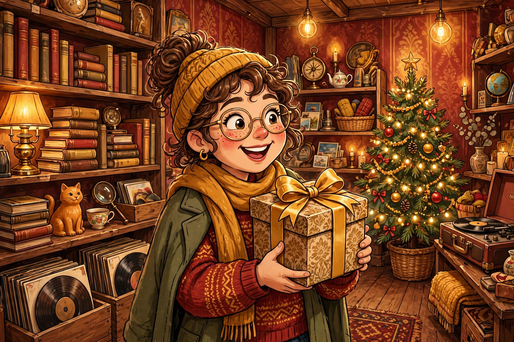

Secondhand gifting
The Thriftmas Guide: Gifting Secondhand Without It Looking Cheap
Thrifted gifting is having a moment — and done right, it beats buying new. How to find great pieces, clean and restore them, and present them so the gift feels generous, not budget.
Read the guide →